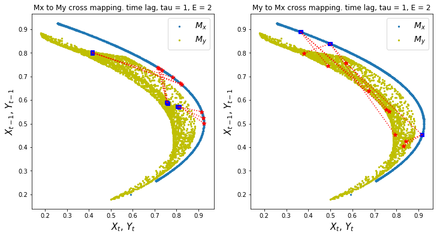
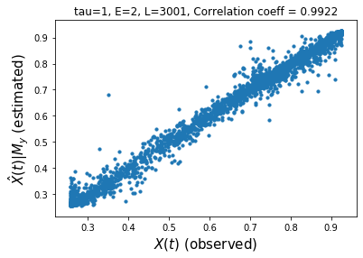

Applying CCM Using causal-ccm package¶
!pip install causal-ccm
Requirement already satisfied: causal-ccm in /Users/prince.javier/opt/anaconda3/envs/atsa/lib/python3.7/site-packages (0.3.2)
Requirement already satisfied: pandas in /Users/prince.javier/opt/anaconda3/envs/atsa/lib/python3.7/site-packages (from causal-ccm) (1.2.1)
Requirement already satisfied: numpy in /Users/prince.javier/opt/anaconda3/envs/atsa/lib/python3.7/site-packages (from causal-ccm) (1.20.0)
Requirement already satisfied: scipy in /Users/prince.javier/opt/anaconda3/envs/atsa/lib/python3.7/site-packages (from causal-ccm) (1.6.0)
Requirement already satisfied: seaborn in /Users/prince.javier/opt/anaconda3/envs/atsa/lib/python3.7/site-packages (from causal-ccm) (0.11.1)
Requirement already satisfied: matplotlib in /Users/prince.javier/opt/anaconda3/envs/atsa/lib/python3.7/site-packages (from causal-ccm) (3.3.4)
Requirement already satisfied: kiwisolver>=1.0.1 in /Users/prince.javier/opt/anaconda3/envs/atsa/lib/python3.7/site-packages (from matplotlib->causal-ccm) (1.3.1)
Requirement already satisfied: cycler>=0.10 in /Users/prince.javier/opt/anaconda3/envs/atsa/lib/python3.7/site-packages (from matplotlib->causal-ccm) (0.10.0)
Requirement already satisfied: pillow>=6.2.0 in /Users/prince.javier/opt/anaconda3/envs/atsa/lib/python3.7/site-packages (from matplotlib->causal-ccm) (8.1.0)
Requirement already satisfied: pyparsing!=2.0.4,!=2.1.2,!=2.1.6,>=2.0.3 in /Users/prince.javier/opt/anaconda3/envs/atsa/lib/python3.7/site-packages (from matplotlib->causal-ccm) (2.4.7)
Requirement already satisfied: python-dateutil>=2.1 in /Users/prince.javier/opt/anaconda3/envs/atsa/lib/python3.7/site-packages (from matplotlib->causal-ccm) (2.8.1)
Requirement already satisfied: six in /Users/prince.javier/opt/anaconda3/envs/atsa/lib/python3.7/site-packages (from cycler>=0.10->matplotlib->causal-ccm) (1.15.0)
Requirement already satisfied: pytz>=2017.3 in /Users/prince.javier/opt/anaconda3/envs/atsa/lib/python3.7/site-packages (from pandas->causal-ccm) (2021.1)
from causal_ccm.causal_ccm import ccm
import pandas as pd
import matplotlib.pyplot as plt
from tqdm import tqdm
Generate Sample Dataset¶
# Initialize test dataset
def func_1(A, B, r, beta):
return A * (r - r * A - beta * B)
# params
r_x = 3.7
r_y = 3.7
B_xy = 0 # effect on x given y (effect of y on x)
B_yx = 0.32 # effect on y given x (effect of x on y)
X0 = 0.2 # initial val following Sugihara et al
Y0 = 0.4 # initial val following Sugihara et al
t = 3000 # time steps
X = [X0]
Y = [Y0]
for i in range(t):
X_ = func_1(X[-1], Y[-1], r_x, B_xy)
Y_ = func_1(Y[-1], X[-1], r_y, B_yx)
X.append(X_)
Y.append(Y_)
plt.figure(figsize=(16,4))
max_t = 100
plt.plot(X[:max_t], linewidth=1.25, label='X')
plt.plot(Y[:max_t], c='r', linewidth=1.25, label='Y')
plt.xlabel('timestep', size=15)
plt.ylabel('value of X or Y', size=15)
plt.legend(prop={'size': 20})
<matplotlib.legend.Legend at 0x7f8320ad5710>

Run CCM¶
tau = 1 # time lag
E = 2 # shadow manifold embedding dimensions
L = len(X) # length of time period to consider
ccm1 = ccm(X, Y, tau, E, L)
# causality X -> Y
# returns: (correlation ("strength" of causality), p-value(significance))
ccm1.causality()
(0.9922458514060818, 0.0)
# visualize sample cross mapping
ccm1.visualize_cross_mapping()

# visualize correlation of X->Y
# stronger correlation = stronger causal relationship
ccm1.plot_ccm_correls()

# checking convergence
# Looking at "convergence"
L_range = range(50, 3000, 200) # L values to test
tau = 1
E = 2
Xhat_My, Yhat_Mx = [], [] # correlation list
for L in tqdm(L_range):
ccm_XY = ccm(X, Y, tau, E, L) # define new ccm object # Testing for X -> Y
ccm_YX = ccm(Y, X, tau, E, L) # define new ccm object # Testing for Y -> X
Xhat_My.append(ccm_XY.causality()[0])
Yhat_Mx.append(ccm_YX.causality()[0])
# plot convergence as L->inf. Convergence is necessary to conclude causality
plt.figure(figsize=(5,5))
plt.plot(L_range, Xhat_My, label='$\hat{X}(t)|M_y$')
plt.plot(L_range, Yhat_Mx, c='r', label='$\hat{Y}(t)|M_x$')
plt.xlabel('L', size=15)
plt.ylabel('correl', size=15)
plt.legend(prop={'size': 20})
0%| | 0/15 [00:00<?, ?it/s]
13%|█▎ | 2/15 [00:00<00:00, 15.54it/s]
27%|██▋ | 4/15 [00:00<00:01, 5.79it/s]
33%|███▎ | 5/15 [00:01<00:02, 4.14it/s]
40%|████ | 6/15 [00:01<00:02, 3.06it/s]
47%|████▋ | 7/15 [00:02<00:03, 2.36it/s]
53%|█████▎ | 8/15 [00:03<00:03, 1.85it/s]
60%|██████ | 9/15 [00:03<00:03, 1.51it/s]
67%|██████▋ | 10/15 [00:05<00:03, 1.26it/s]
73%|███████▎ | 11/15 [00:06<00:03, 1.04it/s]
80%|████████ | 12/15 [00:07<00:03, 1.11s/it]
87%|████████▋ | 13/15 [00:09<00:02, 1.29s/it]
93%|█████████▎| 14/15 [00:11<00:01, 1.48s/it]
100%|██████████| 15/15 [00:13<00:00, 1.68s/it]
100%|██████████| 15/15 [00:13<00:00, 1.10it/s]
<matplotlib.legend.Legend at 0x7f82f88c0790>
From the charts above, we find clear convergent cross mapping for the effect of \(X\) on \(Y\) but no clear CCM for the effect of \(Y\) on \(X\). We can then say that \(X\) drives \(Y\) but \(Y\) does not drive \(X\)